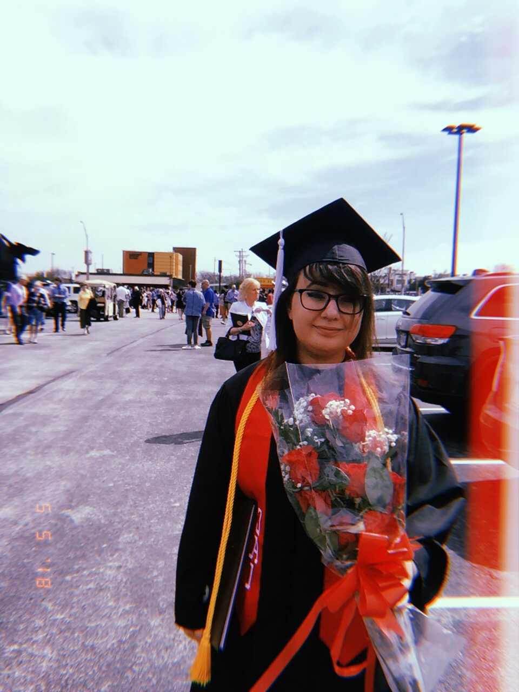

✩ The Resume of Julia Fraczek ✩

Activities
Not Yet Perfect A Cappella
(January 2015 – May 2018)
Vice President (August 2015 – May 2016)
Co-Director (August 2016 – May 2017)
- Arranged and taught my own versions of popular songs to a group of students with varying music abilities
- Logistically planned and executed performances around campus
- Partnered with other student organizations for joint events,fundraisers, etc.
- Maintained all social media pages for the group
Sigma Alpha Iota
(January 2016 – May 2018)
(January 2019 - Present)
Song Chair (August 2017 – May 2018)
- Represented a women’s professional music fraternity by educating members about the traditional songs associated with the organization
- Orchestrated concert events for members to showcase their own musical talent
Accomplishments and Awards
Scholarships
- Award of Distinction: August 2014 – May 2018
- BG Success Scholarship: August 2014 – May 2018
- Dean’s List: Fall 2015 – Spring 2018